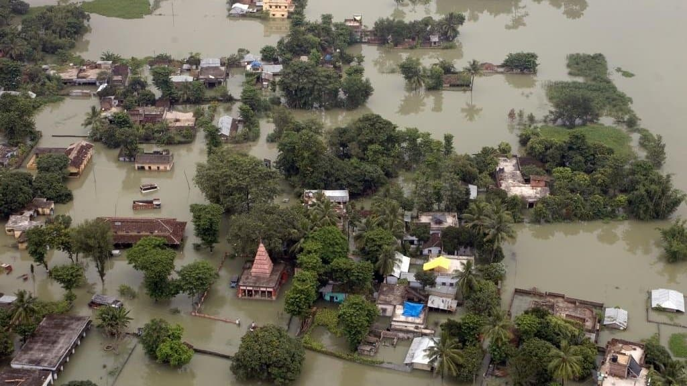
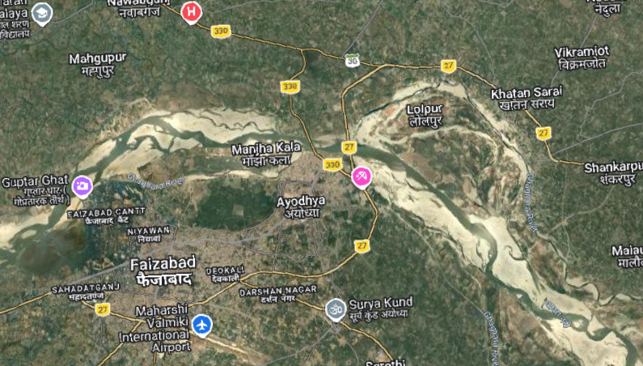
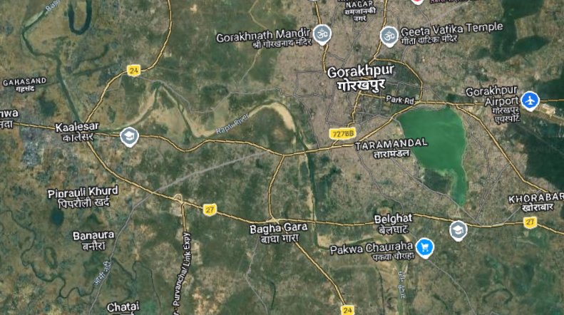
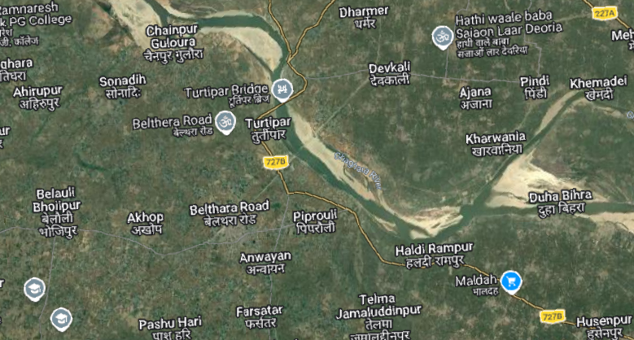
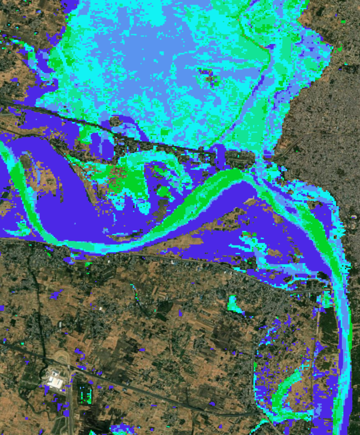
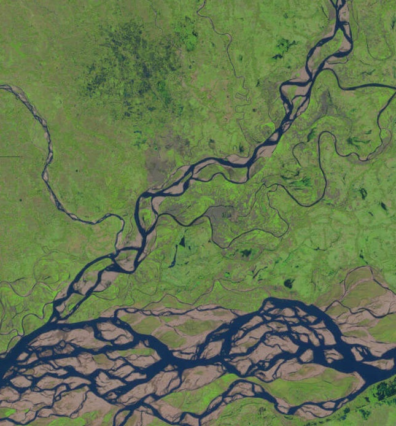
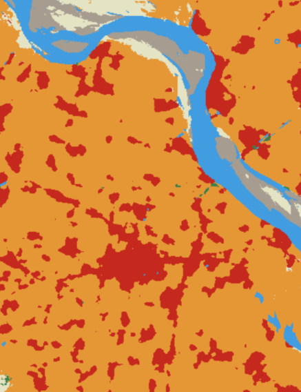
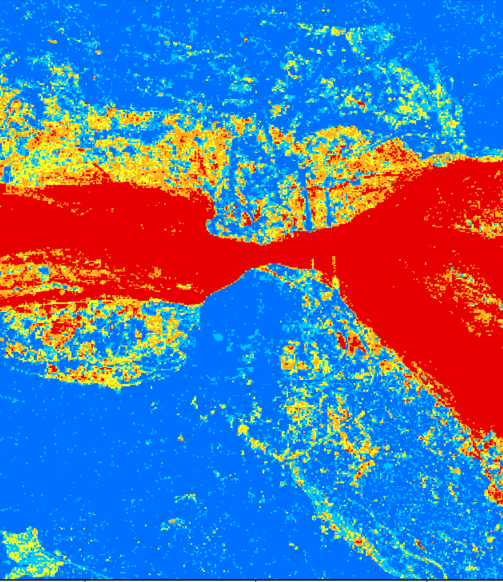
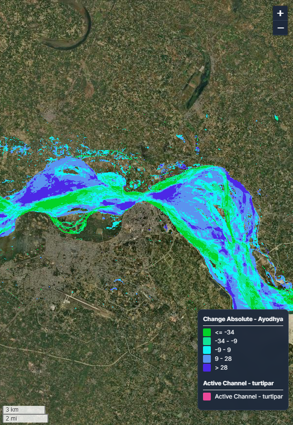

An integrated hydro geomorphic framework using satellite data and machine learning to guide flood resilient urban planning.
Years of data
Archives analyzed
Resilience centres
This initiative pioneers a sophisticated hydro geomorphic framework designed to safeguard the rapidly growing urban centers of Ayodhya, Gorakhpur, and Turtipar. By merging thirty years of longitudinal satellite data, we analyze the critical intersection of river dynamics such as channel migration and sediment flux with the expanding human footprint on the Ghaghra-Rapti floodplains.
In partnership with the Kotak School of Sustainability (KSS), our multidisciplinary approach translates these scientific insights into actionable urban policies and nature based solutions, moving beyond disaster response toward a proactive, evidence based model of resilience for India’s most sensitive riverine environments.




Floodplain reconstructed with satellite archives, tracking water shifts with geospatial metrics, distinguishing permanent channels, hotspots, and ephemeral bodies across 37 years of climate variability.

River Space analysis overlays annual water masks (1991–2025), tracking migration, braid belt expansion, erosion zones, quantifying river mobility, identifying geomorphic instability and floodway threats to agriculture.

LULC dynamics assessed with high-resolution imagery, mapping transitions among water, vegetation, built-up areas, quantifying floodplain conversion into impermeable surfaces and intensive agriculture threatening retention zones.

Flood hazard zonation uses machine learning on decades of water data, producing susceptibility maps that pinpoint topographic depressions and weather-driven hotspots of inundation risk.

Web GIS platform synthesizes research outputs into interactive interface, optimizing rasters to transform static data into dynamic tools, enabling stakeholders to visualize flood susceptibility, land use, and river space.
Translating scientific data into actionable policies, focusing on cost-benefit analysis and sustainable technology.
Our Web GIS Data provides high resolution hazard maps, LULC dynamics, river space demarcation and historical river data.
Launch GIS DataFlood Analysis
River Space
Land Use Land Cover Dynamics
Hazard Zonation
Environmental Policies